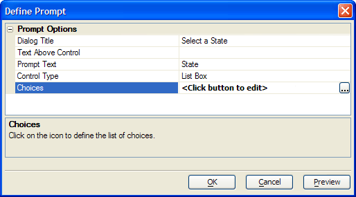

Define Prompt Dialog
The purpose of the Define Prompt dialog is to define a prompt to the user. This prompt will collect information to use in a filter expression, which in turn will filter the records that the List View Genie or ADO Import Genie will return.
Optionally, enter the dialog title into the Prompt Options > Dialog Title field.
Optionally, enter text to appear above the control into the Prompt Options > Text Above Control field.
Optionally, enter text to appear to the left of the control into the Prompt Options > Prompt Text field.
Make a selection from the Prompt Options > Control Type list. The options are:
"Check Box List Box"
"Drop Down List Box"
"Edit Combo Box"
"List Box"
"Multi-Select List Box"
"Radio Button"
"Textbox"
For all selections except "Textbox", click
 in the Prompt
Options > Choices field and define the choices to appear.
in the Prompt
Options > Choices field and define the choices to appear.Click OK to continue.

See Also